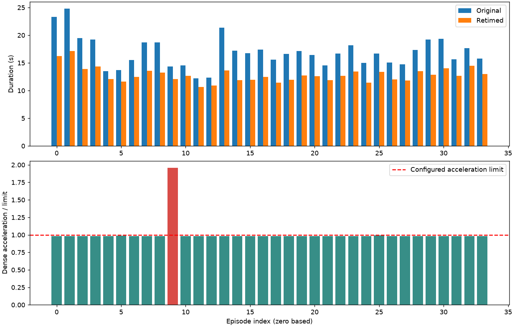

2026-11-23 · 20261102 单箱搬运数据 · 第一次默认参数基线
共 34 条轨迹、5 路相机；17245 帧 → 13095 帧，节省 24.06% 时间。输出仍为 30 Hz。 本次没有发生悬停剪切，加速来自重新分配轨迹执行时间。总时长按帧数 / 30 计算。
结构、映射与视频检查通过；第 9 号轨迹（从 0 编号）的第二关节加速度峰值约为上限的 1.959 倍，约 117.54°/s²，上限为 60°/s²。 峰值出现在原始时间 8.0 秒、离开保护窗口的连接位置。该段求解记录了不可行网格点，现有算法仍使用回退值继续输出。
第 1、9 号轨迹各记录 2 个不可行网格点。其余轨迹的密集采样解析速度、加速度检查没有超过配置硬上限， 但这不等于完整输出或真实机器人验证通过。30 Hz 关节角二阶差分另有 24 条轨迹超限，见 validation.json； 该检查包括原样保留的保护帧以及连接处，与解析曲线检查口径不同。
当前结果保留作实验基线。下一步应修复不可行求解的回退处理与保护窗口连接策略，再重新验证，而不能只依赖平均加速倍率。
对关节角作 30 Hz 二阶差分，每个结果使用连续 3 帧；只有 3 帧均处于同一区域才归入该区域，否则归入连接处。原始数据与输出使用同一检查口径。
| 区域 | 超限轨迹数 | 峰值 / 上限 | 超限采样位置数 |
|---|---|---|---|
| 原始数据全部 | 34 | 1.895 | 626 |
| 加速后全部 | 24 | 1.559 | 103 |
| 加速后：纯加速区间 | 0 | 0.980 | 0 |
| 加速后：原样保护区间 | 23 | 1.559 | 98 |
| 加速后：连接处 | 4 | 1.501 | 5 |
二阶差分检查反映输出离散点的变化。它可能漏掉帧间很短的尖峰，因此纯加速区间差分通过不能消除第 9 号轨迹解析曲线的超限。
示例为第 22 号轨迹：16.67 秒 → 12.63 秒， 1.319 倍速。左侧原始、右侧加速，同时开始且均按 30 fps 播放；右侧结束后定格，上方 surround、下方 cam9。 这是实采画面的重采样对比，不是仿真或实际执行后重新拍摄的结果。示例选择接近中位倍率的轨迹，异常轨迹另见下图与表格。

| 轨迹 | 原帧数 | 新帧数 | 原秒数 | 新秒数 | 倍率 | 加速度/上限 | 不可行点 |
|---|---|---|---|---|---|---|---|
| 0 | 700 | 487 | 23.33 | 16.23 | 1.437 | 0.981 | 0 |
| 1 | 743 | 514 | 24.77 | 17.13 | 1.446 | 0.983 | 2 |
| 2 | 585 | 416 | 19.50 | 13.87 | 1.406 | 0.981 | 0 |
| 3 | 576 | 430 | 19.20 | 14.33 | 1.340 | 0.984 | 0 |
| 4 | 405 | 363 | 13.50 | 12.10 | 1.116 | 0.981 | 0 |
| 5 | 412 | 349 | 13.73 | 11.63 | 1.181 | 0.988 | 0 |
| 6 | 465 | 374 | 15.50 | 12.47 | 1.243 | 0.981 | 0 |
| 7 | 560 | 408 | 18.67 | 13.60 | 1.373 | 0.981 | 0 |
| 8 | 561 | 397 | 18.70 | 13.23 | 1.413 | 0.983 | 0 |
| 9 | 431 | 362 | 14.37 | 12.07 | 1.191 | 1.959 | 2 |
| 10 | 436 | 380 | 14.53 | 12.67 | 1.147 | 0.982 | 0 |
| 11 | 366 | 319 | 12.20 | 10.63 | 1.147 | 0.980 | 0 |
| 12 | 371 | 327 | 12.37 | 10.90 | 1.135 | 0.981 | 0 |
| 13 | 640 | 410 | 21.33 | 13.67 | 1.561 | 0.985 | 0 |
| 14 | 517 | 356 | 17.23 | 11.87 | 1.452 | 0.981 | 0 |
| 15 | 503 | 358 | 16.77 | 11.93 | 1.405 | 0.981 | 0 |
| 16 | 522 | 375 | 17.40 | 12.50 | 1.392 | 0.980 | 0 |
| 17 | 467 | 342 | 15.57 | 11.40 | 1.365 | 0.982 | 0 |
| 18 | 499 | 359 | 16.63 | 11.97 | 1.390 | 0.981 | 0 |
| 19 | 515 | 381 | 17.17 | 12.70 | 1.352 | 0.980 | 0 |
| 20 | 492 | 377 | 16.40 | 12.57 | 1.305 | 0.981 | 0 |
| 21 | 437 | 356 | 14.57 | 11.87 | 1.228 | 0.982 | 0 |
| 22 | 500 | 379 | 16.67 | 12.63 | 1.319 | 0.982 | 0 |
| 23 | 546 | 403 | 18.20 | 13.43 | 1.355 | 0.981 | 0 |
| 24 | 450 | 343 | 15.00 | 11.43 | 1.312 | 0.981 | 0 |
| 25 | 501 | 401 | 16.70 | 13.37 | 1.249 | 0.994 | 0 |
| 26 | 452 | 361 | 15.07 | 12.03 | 1.252 | 0.980 | 0 |
| 27 | 442 | 354 | 14.73 | 11.80 | 1.249 | 0.981 | 0 |
| 28 | 521 | 405 | 17.37 | 13.50 | 1.286 | 0.981 | 0 |
| 29 | 577 | 386 | 19.23 | 12.87 | 1.495 | 0.982 | 0 |
| 30 | 580 | 420 | 19.33 | 14.00 | 1.381 | 0.983 | 0 |
| 31 | 470 | 379 | 15.67 | 12.63 | 1.240 | 0.980 | 0 |
| 32 | 530 | 434 | 17.67 | 14.47 | 1.221 | 0.984 | 0 |
| 33 | 473 | 390 | 15.77 | 13.00 | 1.213 | 0.981 | 0 |
最大局部倍率 3；margin=0.98；速度上限 [63,36,90,108,162,162]°/s； 加速度上限 [120,60,90,96,192,192]°/s²；保护窗口前后各 0.8 秒；样条平滑 λ=0.0001；网格细分 4；视频 libx264、QP=18（有损）。
输入：/mnt/data/leilv/openpi_sculptor/dataset/temp/sculptor_sku_a_b_20261116/datasets/lerobot_20261102_V19_20261102-gpu-hefei-poc_sft_6f5ca00c
输出：/root/acce_exp/runs/sculptor_34_baseline/output/lerobot_20261102_V19_20261102-gpu-hefei-poc_sft_6f5ca00c_retime
执行命令和代码 SHA256 见 launch.json；逐帧映射见输出中的 frame_map.parquet；完整检查见 validation.json。 此批为 20261102 的 34 条数据，与用户提供的历史 496 条报告不同。